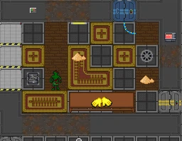
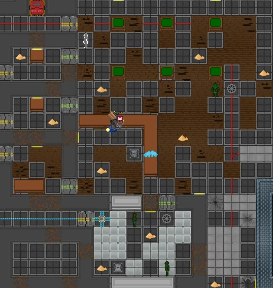
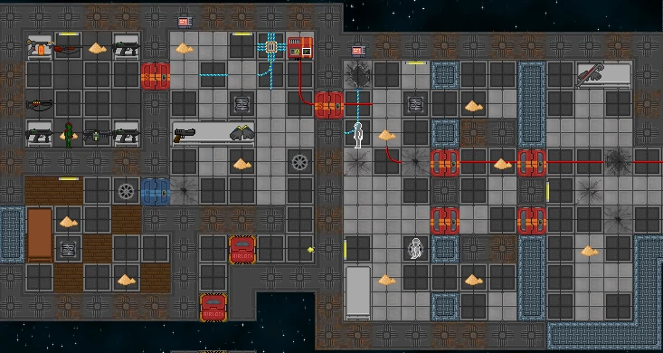
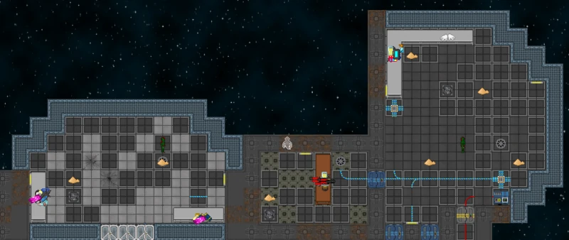

Relicta¶
Relicta is a abandoned station filled with Zombies, Husks, and Ghosts. The Station is on emergency power, so bulkhead shutters cannot be opened and lighting is terrible. Standard procedure for exploring Relicta involves turning the power on in engineering, or flipping the backup battery systems in each department on. !!Map Location|image1## Relicta.png|
Church!!!!Sub Header|text=Mobs¶
{| class="wikitable" !Mob Name !Quantity |- !Zombie !x1 |}!!Sub Header|text=Items!! {| class="wikitable" !Item Name !Quantity of Item |- !Sand !x? |}
Engineering¶
[[File:Z-engi.PNG|none|thumb]] {| class="wikitable" !Mob Name !Quantity |- !Zombie !x7 |- !Husk !x1 |}!!Sub Header|text=Items!! {| class="wikitable" !Item Name !Quantity of Item |- !Plasma !x? |- !Random weapon Spawn !x3 |}
Dorms/Kitchen¶
 {| class="wikitable" !Mob Name ! Quantity |- !Zombie !x1 |}!!Sub Header|text=Items!! {| class="wikitable" !Item Name !Quantity of Item |- !Random Gun !x1 |}
Security¶
 {| class="wikitable" !Mob Name !Quantity |- !Zombie !x1 |- !Ghost !x1 |}!!Sub Header|text=Items!! {| class="wikitable" !Item Name !Quantity of Item |- !Pistol !x1 |- !Sub Machine Gun !x3 |- !Saw !x1 |- !Flamethrower !x1 |- !Combat Shotgun !x1 |- !Shotgun !x1 |}
Command¶
Contains plasma, captains gloves. {| class="wikitable" !Mob Name !Quantity |- !Zombie !x1 |}!!Sub Header|text=Items!! {| class="wikitable" !Item Name !Quantity of Item |- !Random Item !x1 |} | Department | Roles | |-------------|-------------------------------------------------------------------------------------------------------------------------------------------------------------------------------------------------------| | Command | Captain, Head of Personnel | | Security | Head of Security, Warden, Security Officer, Detective | | Engineering | Chief Engineer, Engineer, Atmospherics Technician | | Science | Research Director, Scientist, Geneticist, Roboticist | | Medical | Chief Medical Officer, Medical Doctor, Chemist, Virologist | | Cargo | Quartermaster, Cargo Technician, Shaft Miner | | Service | Bartender, Cook, Janitor, Clown, Mime, Curator, Lawyer, Chaplain, Assistant | | Synthetic | Currently empty | | Antagonist | revolutionary, Nuclear operative, Traitor | | Other | Cent officer, Deathsquad, ERT